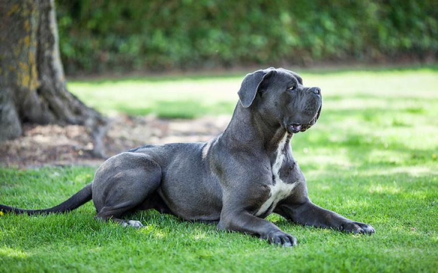

Iets over mijzelf schrijven is altijd lastig, maar over iets wat ik leuk vind gaat een stuk makkelijker. Zelf vind ik honden erg leuk. Wij zijn opgegroeid met honden thuis en in de periode dat ik in het buitenland woonde had ik zelf 5 honden. Op het moment heb ik geen hond maar zodra de situatie het toelaat komt er zeker weer 1. Onlangs ben ik begonnen aan een traject om te kijken of hondentrainer iets voor mij is. Een leuke ontspanningsvorm wellicht om mens en dier te helpen. Zodra er weer plek is voor een hond zal dit waarschijnlijk een Cane Corso worden. Zie hieronder voor een afbeelding.
